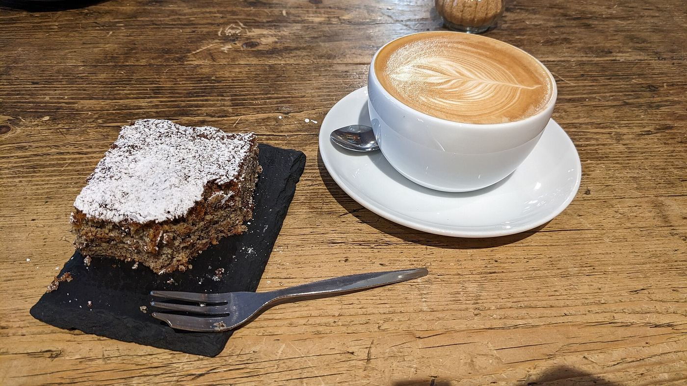
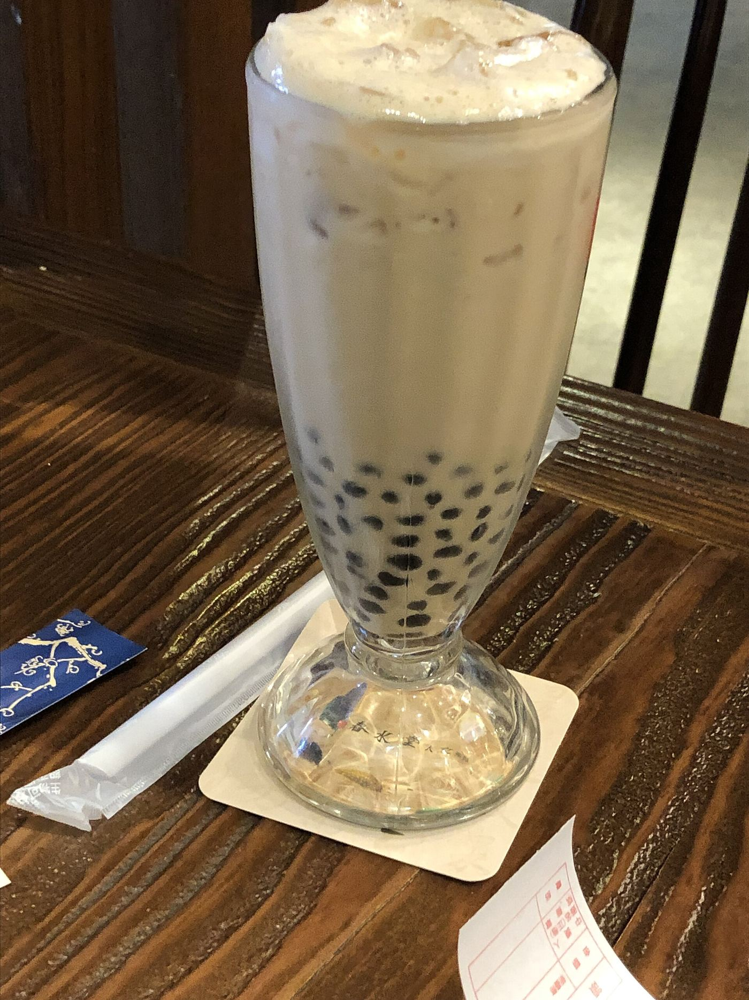
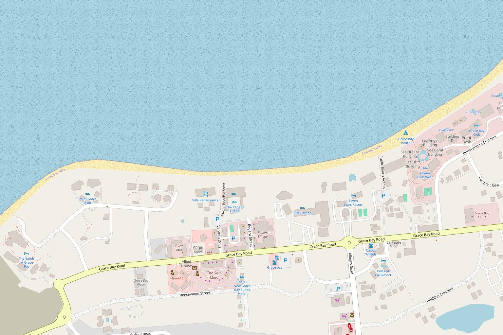

Cappuccino
Espresso under a thick cap of foamed milk.
One hot cappuccino.

Stay a while
Dark walls, warm wood and cold air inside, with free Wi-Fi for getting some work done. Outside, tables look over Grace Bay Road.
It is a short walk or an easy bike ride from most Grace Bay hotels and resorts.

What people say
Google, 309 reviews
4.6“My favorite coffee shop in Providenciales, Turks and Caicos!”
Elen Pradera, The best restaurants in Providenciales
“Beans and Leaves’ coffee is on point (they also have oat milk).”
Elen Pradera
“With free Wi-Fi, this place is also great for getting some quick work done as well as people-watching.”
Fodor's Travel, Restaurants in Grace Bay
Google reviews, by stars
- 5 stars
- 242
- 4 stars
- 42
- 3 stars
- 7
- 2 stars
- 8
- 1 star
- 10
What guests keep mentioning
The black americano, perfect cappuccinos, iced mochas with an extra shot, cold brew, the ube ensaymada, coffee bread, Spanish bread and fluffy egg sandwiches.
Had a coffee here?
Rating and mentions from Google reviews via Wanderlog, October 2026. Quotes from Elen Pradera and Fodor's as published on Wanderlog.
Find us in Regent Village
Grace Bay Road, in the middle of Grace Bay, Providenciales.
Every day from 7:30am
- Monday to Saturday
- 7:30am to 6pm
- Sunday
- 7:30am to 5pm
649 232 2326649 946 3583beansandleavestci@gmail.com
Get directions
Beans & Leaves